Dia de la batalla del 5 de Mayo
-
¿En que consiste el dia de la batalla del 5 de Mayo?
-
Inicio del conflicto
-
Antecedentes del conflicto
Personajes importantes
En la batalla de el 5 de Mayo intervinieron muchos personajes importantes los cuales se presentan a continuación:
 Benito Juárez García
Benito Juárez García
Benito Juárez García es quizá haber marcado un parteaguas en la historia de México, al lograr la consolidación de la república, durante la batalla de Puebla del 5 de Mayo de 1862, fue seminarista al ver que éstos gozaban de buena educación, siendo presidente decidió separar a la Iglesia del Estado, decretando en 1859 la primera de las normas de lo que sería denominado la Reforma: La Ley de Nacionalización de los Bienes Eclesiásticos.
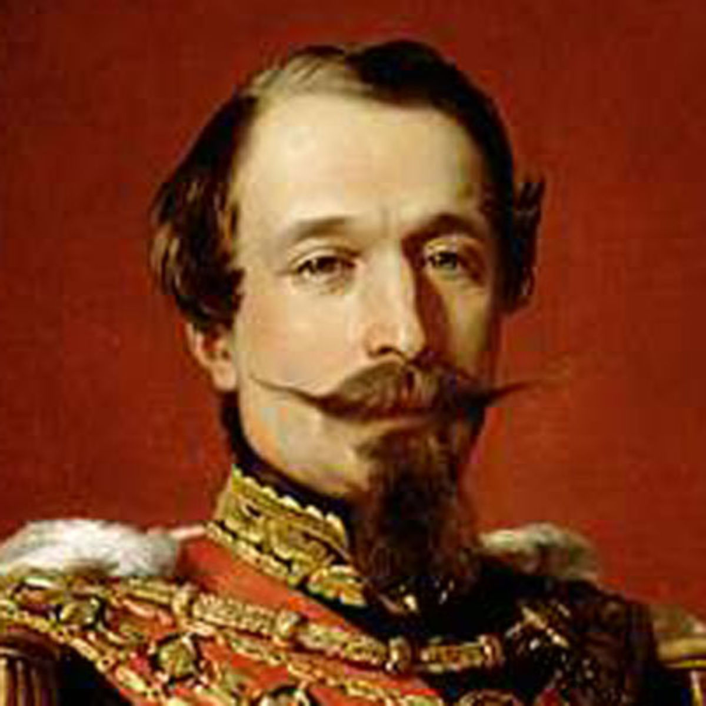Napoleón III
Napoleón III pensaba establecer en México una monarquía favorable para Francia. Sus trpas francesas estaban muy bien equipadas y eran mucho más grandes que el ejercito Mexicano; por lo que Benito Juárez convocó a toda la población a que luchara, así se formó un ejército de aproximadamente 4800 hombres.
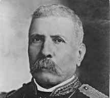Charles Ferdinand Latrille, Conde de Lorencez
Fue un militar francés que participó en la segunda intervención francesa en México, liderando al ejército francés en la batalla de Puebla, bajo el Emperador de Francia, Napoleón III, en 1862. Era un pariente de la emperatriz Carlota, quién fue la única hija del Rey Leopoldo I, Rey de los Belgas y esposa del emperador Maximiliano
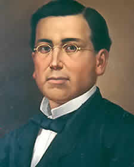Ignacio Zaragoza Seguin
fue un militar mexicano reconocido como el héroe de la Batalla de Puebla, que tuvo lugar el 5 de mayo de 1862, cuando el ejército mexicano derrotó al ejército francés de élite al mando de Charles Ferdinand Latrille.
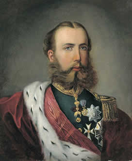FernandoMaximiliano José María de Habsburgo-Lorena
Fue el que llego junto con su esposa a la ciudad de México para instalar el Imperio Mexicano y fueron coronados como el Emperador y la Emperatriz de México. Aunque Maximiliano organizó la administración del gobierno, liberó a los indios de la esclavitud, y desarrolló los recursos naturales del país.
Fecha de la batalla
Fecha de la batalla
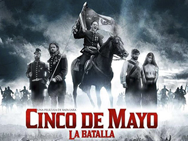La batalla de Puebla fue un combate librado el 5 de mayo de 1862 en las cercanías de la ciudad de Puebla, entre los ejércitos de la República Mexicana, bajo el mando de Ignacio Zaragoza, y del Segundo Imperio Francés, dirigido por Charles Ferdinand Latrille, conde de Lorencez, durante la Segunda Intervención Francesa en México, cuyo resultado fue una victoria importante para los mexicanos ya que con unas fuerzas consideradas como inferiores lograron vencer a uno de los ejércitos más experimentados y respetados de su época. Pese a su éxito, la batalla no impidió la invasión del país, sólo la retrasó, sin embargo, sería la primera batalla de una guerra que finalmente México ganaría. Los franceses regresarían al siguiente año, con lo que se libró una segunda batalla en Puebla en la que se enfrentaron 35 000 franceses contra 29 000 mexicanos (defensa que duró 62 días), y lograrían avanzar hasta la Ciudad de México, lo que permitió establecer el Segundo Imperio Mexicano.
Desarrollo
Lugares donde se efectuaron la batalla
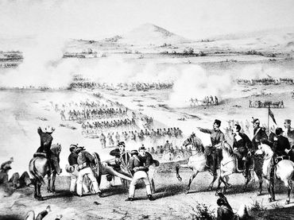Asegurado el paso de Acultzingo, el 2 de mayo de 1862 la columna principal del ejército expedicionario francés salió de San Agustín del Palmar, en Veracruz, para cruzar la Sierra Madre Oriental y dirigirse hacia Puebla, paso obligado para llegar a la capital del país y que era además uno de los bastiones del Partido Conservador, donde esperaban ser recibidos "con una lluvia de rosas", como le aseguró Saligny a Napoleón III en una carta.4 El 3 de mayo por la noche, el general Zaragoza arribó a Puebla, dejando en su retaguardia una brigada de caballería para hostigar a los invasores. Los efectivos del Ejército de Oriente se organizaron por las calles desiertas de la ciudad, ya que la mayoría de la población era partidaria de la invasión.
 El 4 de mayo, los exploradores mexicanos volvieron con noticias de que una columna de conservadores a caballo, al mando de Leonardo Márquez y José María Cobos, marchaba por la zona de Atlixco para unirse con las fuerzas de Lorencez en el ataque a Puebla. Zaragoza envió una brigada de 2000 hombres bajo el mando de Tomás O'Horán y Antonio Carbajal, con el fin de detenerlo, lo cual lograron. Aunque sus fuerzas habían disminuido, los mexicanos se prepararon para la defensa de Puebla. Contaban con dos baterías de artillería de batalla y dos de montaña, cubriendo los fuertes con 1200 hombres y formando a otros 3500 en cuatro columnas de infantería con una batería de batalla y una brigada de caballería por el lado del camino a Amozoc.
El 4 de mayo, los exploradores mexicanos volvieron con noticias de que una columna de conservadores a caballo, al mando de Leonardo Márquez y José María Cobos, marchaba por la zona de Atlixco para unirse con las fuerzas de Lorencez en el ataque a Puebla. Zaragoza envió una brigada de 2000 hombres bajo el mando de Tomás O'Horán y Antonio Carbajal, con el fin de detenerlo, lo cual lograron. Aunque sus fuerzas habían disminuido, los mexicanos se prepararon para la defensa de Puebla. Contaban con dos baterías de artillería de batalla y dos de montaña, cubriendo los fuertes con 1200 hombres y formando a otros 3500 en cuatro columnas de infantería con una batería de batalla y una brigada de caballería por el lado del camino a Amozoc.
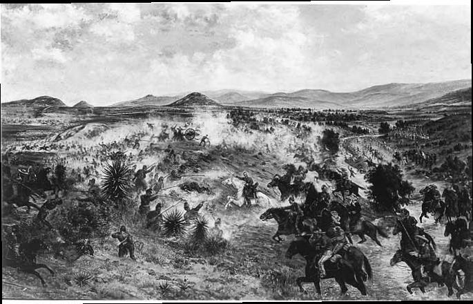El ala derecha mexicana la cubrían las tropas de Oaxaca dirigidas por Porfirio Díaz. El centro de la línea lo ocuparon Felipe Berriózabal y Francisco Lamadrid con las tropas del Estado de México y San Luis Potosí. La izquierda se apoyó en el cerro de Acueyametepec ubicado en el norte de la ciudad y en cuya cumbre se ubicaban los Fuertes de Loreto y Guadalupe, con el general Miguel Negrete a la cabeza de la Segunda División de Infantería. La artillería sobrante la colocaron en los fortines y reductos dentro de Puebla, quedando al mando del general Santiago Tapia.A las 9:15 de la mañana del 5 de mayo, los franceses aparecieron en el horizonte, avanzando desde la cercana Hacienda de Rementería, cruzando fuego con las guerrillas de caballería que se batían en retirada y que no se replegaron hasta que las líneas francesas estuvieron formadas y listas para avanzar. La batalla se inició en forma a las 11:15 de la mañana, anunciándose con un cañonazo desde el Fuerte de Guadalupe y acompañado por los repiques de las campanas de la ciudad. En ese momento se dio una maniobra sorpresiva: la columna francesa, que venía avanzando en orden de oriente a poniente, se dividió en dos: la primera, compuesta por aproximadamente 4000 hombres y protegida con su artillería, dio un violento viraje hacia la derecha y se dirigió hacia los fuertes; mientras que la segunda columna, compuesta por el resto de la infantería, quedó como reserva. Los conservadores Almonte y Antonio de Haro y Tamariz, que acompañaban a los franceses, habían sugerido que el ataque se dirigiera a las inmediaciones del ex Convento del Carmen, en el sur de la ciudad, tomando como antecedente lo que sucedió en el sitio durante la Guerra con Estados Unidos.
Culminación de la batalla
Conclusión de la batalla
Los franceses, apoyados por el 1.er. y 2o. Regimientos de Infantería de Marina, se abalanzaron sobre el resto de la línea mexicana, siendo recibidos con la bayoneta. La columna francesa fue rechazada en Guadalupe y Loreto, siendo igualmente repelidos los ataques de otras columnas francesas desplegadas. En ese momento, el coronel mexicano José Rojo avisó a Antonio Álvarez que era tiempo de que la caballería mexicana entrara en acción para alcanzar una victoria completa. Ordenó a los Carabineros de Pachuca cargar sobre los restos de la columna, disparando sus carabinas y lanzando mandobles de sable sobre los franceses, siendo totalmente rechazados.
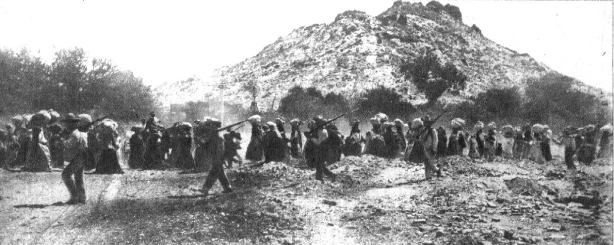Ante esta situación, salieron a su encuentro los Zapadores de San Luis Potosí, al mando del general Lamadrid, librándose un terrible combate a la bayoneta. Una casa situada en la falda del cerro fue el objetivo. Los franceses la tomaron y se guarecieron en ella, siendo desalojados por los zapadores; la recobraron y de nuevo fueron expulsados por las tropas de Lamadrid. Un cabo mexicano de apellido Palomino se mezcló entre los zuavos y se batió con ellos cuerpo a cuerpo, posesionándose de su estandarte como botín de guerra al caer muerto el portador del mismo.
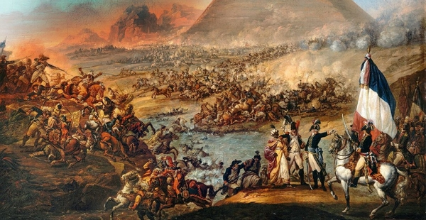 Este momento significó un golpe anímico a favor de los defensores. Ya entrada la tarde cayó un aguacero sobre el campo, lo cual dificultó el avance a las tropas francesas. Zaragoza dispuso que el Batallón Reforma de San Luis Potosí saliera en auxilio de los fuertes. En Loreto había un cañón de 68 libras que causaba enormes estragos en la filas francesas. Los zuavos hicieron una carga de infantería desesperada para apoderarse de esa pieza. El artillero mexicano, sorprendido por la rapidez de los franceses, tenía en sus manos la bala de cañón que no alcanzó a colocar en la boca de fuego. Un zuavo apareció frente a él y tras éste el resto del cuerpo que, una vez apoderados de ese fortín, levantarían la moral francesa y podría perderse la victoria conseguida. El artillero arrojó la bala al soldado francés, que herido mortalmente por el golpe en la cabeza rodó al foso del parapeto. Luego de que este asalto fue rechazado, los franceses retrocedieron siendo perseguidos por el Batallón Reforma.
Mientras, cuando la segunda columna llegó al Fuerte de Guadalupe protegida por una línea de tiradores, Porfirio Díaz acudió en auxilio de los Rifleros de San Luis Potosí, que estaban a punto de ser rodeados. Movió en columna al Batallón Guerrero, a las órdenes del coronel Jiménez, y le ganó el terreno a los franceses. Para apoyar envió al resto de las tropas de Oaxaca, con los coroneles Espinoza y Loaeza a la cabeza, con lo que se logró expulsar al enemigo de las cercanías. El éxito alentó a Díaz, que destacó al Batallón Morelos con dos piezas de artillería a la izquierda, mientras por la derecha los Rifleros de San Luis Potosí se reponían de la pelea, antecedidos por una carga de los Lanceros de Oaxaca, trabándose un combate cuerpo a cuerpo que hizo retroceder a los atacantes.En aquel momento, luego de ser repelidos por última vez, las efectivos franceses empezaron a huir, completamente dispersados. Se replegaron a la hacienda Los Álamos, para finalmente retirarse hacia Amozoc.
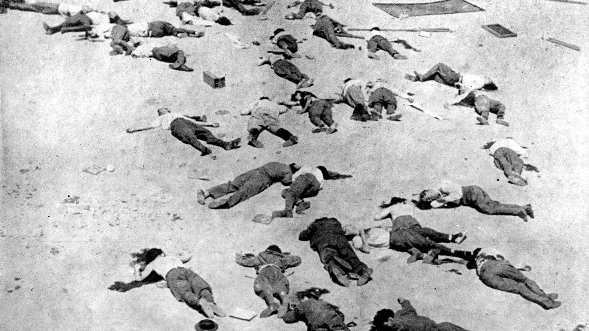El saldo final de la batalla fue de 476 muertos y 345 heridos del lado francés, así como 83 muertos, cerca de 131 heridos y 12 desaparecidos para el Ejército de Oriente. A las 7 de la noche del día 6 de mayo arribaron a Puebla el general Antillón y sus tropas; Zaragoza esperaba un nuevo ataque de Lorencez, pero éste, el día 8 de mayo, dispuso la retirada hasta San Agustín del Palmar, siendo "saludado" por la artillería republicana y la Banda de Guerra de los Carabineros, quienes tocaron "Escape".
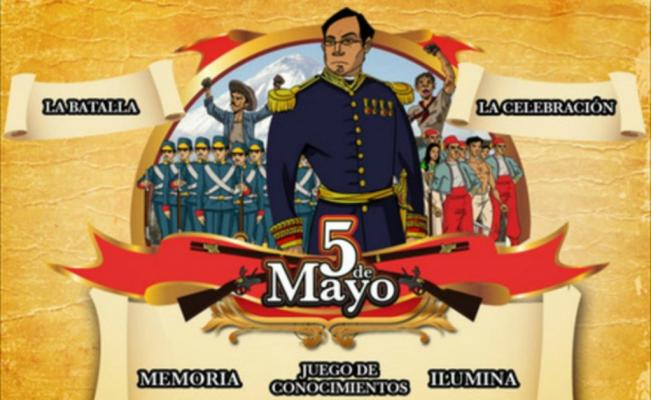
Aplicacion Siete
Miguel Angel Cardona Rosas
¿En que consiste la batalla del 5 de Mayo?
 El Cinco de Mayo es la fecha de la conmemoración de la Batalla de Puebla. Marca la primera vez que el ejército mexicano pudo derrotar a una potencia extranjera mejor preparada, en este caso los franceses. La batalla tuvo lugar en la actual ciudad de Puebla de Zaragoza el 5 de mayo de 1862, entre los ejércitos de México y Francia.
El Cinco de Mayo es la fecha de la conmemoración de la Batalla de Puebla. Marca la primera vez que el ejército mexicano pudo derrotar a una potencia extranjera mejor preparada, en este caso los franceses. La batalla tuvo lugar en la actual ciudad de Puebla de Zaragoza el 5 de mayo de 1862, entre los ejércitos de México y Francia.
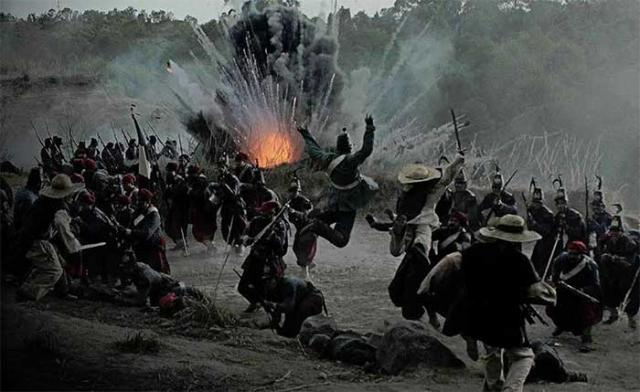
Durante 1862, el país estaba en bancarrota debido a medio siglo de conflictos y guerras casi constantes. No podía hacer frente ni a las necesidades más urgentes, por lo que el 17 de julio de 1861, el presidente Benito Juárez decretó prórroga de dos años para pagar deuda externa a países europeos. En octubre de 1861, Francia, Inglaterra y España se suscribieron a la Convención de Londres y se comprometieron a enviar militares a México para reclamar sus derechos como acreedores por una deuda que ascendía alrededor de 80 millones de pesos. Aproximadamente 69 millones eran para los ingleses, 9 millones para los españoles y 2 millones para Francia. Se negaron a negociar, por la vía diplomática, los términos y condiciones en los que se pagaría la deuda posteriormente. Así que Napoleón III, gobernante de Francia, decidió invadir México para establecer una monarquía favorable a Europa, surtirse de materias primas y en un futuro extender su imperialismo a Estados Unidos. Con ese fin, debía disolver el Gobierno mexicano establecido por el Presidente Benito Juárez.
Video
Festival Internacional de la batalla de el 5 de Mayo del 2016
Para saber mas sobre este festival te invitamos a ver la siguiente página:
Miguel Angel Cardona Rosas
Inicio del conflicto.
 La historia narra que todo comenzó cuando Benito Juárez quien recientemente había sido elegido Presidente de México, suspendió los pagos de la deuda externa por dos años, ya que el país tenía una crisis financiera; así los franceses, españoles e ingleses vinieron a México con el fin de cobrarse a la fuerza la deuda. Pero los ingleses y los españoles se marcharon sin conseguir nada, en contraste los franceses no pensaban irse hasta haber triunfado, ya que Napoleón III pensaba establecer en México una monarquía favorable para Francia. Las tropas francesas estaban muy bien equipadas y eran mucho más grandes que el ejercito Mexicano; por lo que Benito Juárez convocó a toda la población a que luchara, así se formó un ejército de aproximadamente 4800 hombres.
La historia narra que todo comenzó cuando Benito Juárez quien recientemente había sido elegido Presidente de México, suspendió los pagos de la deuda externa por dos años, ya que el país tenía una crisis financiera; así los franceses, españoles e ingleses vinieron a México con el fin de cobrarse a la fuerza la deuda. Pero los ingleses y los españoles se marcharon sin conseguir nada, en contraste los franceses no pensaban irse hasta haber triunfado, ya que Napoleón III pensaba establecer en México una monarquía favorable para Francia. Las tropas francesas estaban muy bien equipadas y eran mucho más grandes que el ejercito Mexicano; por lo que Benito Juárez convocó a toda la población a que luchara, así se formó un ejército de aproximadamente 4800 hombres.
Fue cuando el General Laurencez al mando de las tropas francesas ordenó el asalto a los fuertes de Loreto y Guadalupe, que defendían la ciudad de Puebla al mando del General Ignacio Zaragoza; el ejercito invasor que fue rechazado con grandes pérdidas al intentar repetidas veces tomar las fortificaciones, al final tuvieron que abandonar el campo y retirarse vencidos y perseguidos por la caballería mexicana, la noticia del triunfo en Puebla llenó de entusiasmo a todo el país, moralmente levantó a el pueblo que se encontraba desanimado y temeroso por una posible invasión.
 Pero este no fue el fin de toda la guerra ya que en junio de 1864, un grupo de conservadores marchó a Francia a ofrecer el gobierno al Emperador Francés Napoleón III; ya que este tenía planes de extender el Imperio Francés mandó a Maximiliano de Habsburgo a tomar el trono y formar el Imperio de México. Maximiliano de Habsburgo y su esposa Carlota (austriacos) llegaron a la ciudad de México para instalar el Imperio Mexicano y fueron coronados como el Emperador y la Emperatriz de México. Aunque Maximiliano organizó la administración del gobierno, liberó a los indios de la esclavitud, y desarrolló los recursos naturales del país, no pudo evitar la oposición del pueblo Mexicano. Los republicanos, al mando de Benito Juárez, no aceptaron la intervención extranjera.
Pero este no fue el fin de toda la guerra ya que en junio de 1864, un grupo de conservadores marchó a Francia a ofrecer el gobierno al Emperador Francés Napoleón III; ya que este tenía planes de extender el Imperio Francés mandó a Maximiliano de Habsburgo a tomar el trono y formar el Imperio de México. Maximiliano de Habsburgo y su esposa Carlota (austriacos) llegaron a la ciudad de México para instalar el Imperio Mexicano y fueron coronados como el Emperador y la Emperatriz de México. Aunque Maximiliano organizó la administración del gobierno, liberó a los indios de la esclavitud, y desarrolló los recursos naturales del país, no pudo evitar la oposición del pueblo Mexicano. Los republicanos, al mando de Benito Juárez, no aceptaron la intervención extranjera.
 En octubre de 1861, Francia, Inglaterra y España suscribieron la Convención de Londres, en la cual se comprometieron a enviar contingentes militares a México para reclamar sus derechos como acreedores por una deuda que ascendía a alrededor de 80 millones de pesos, aproximadamente eran 69 millones para los ingleses, 9 millones para los españoles y 2 millones para Francia. El contingente europeo, estaba compuesto de la siguiente manera:
En octubre de 1861, Francia, Inglaterra y España suscribieron la Convención de Londres, en la cual se comprometieron a enviar contingentes militares a México para reclamar sus derechos como acreedores por una deuda que ascendía a alrededor de 80 millones de pesos, aproximadamente eran 69 millones para los ingleses, 9 millones para los españoles y 2 millones para Francia. El contingente europeo, estaba compuesto de la siguiente manera: